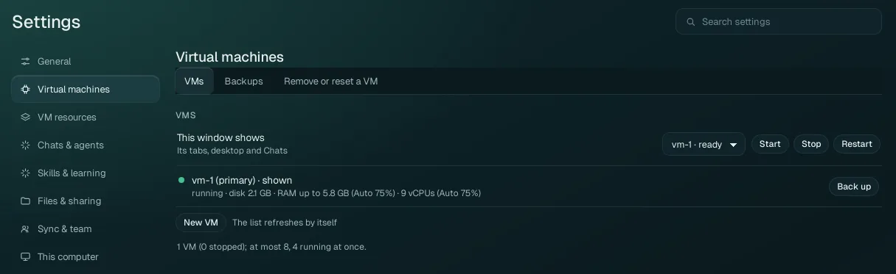
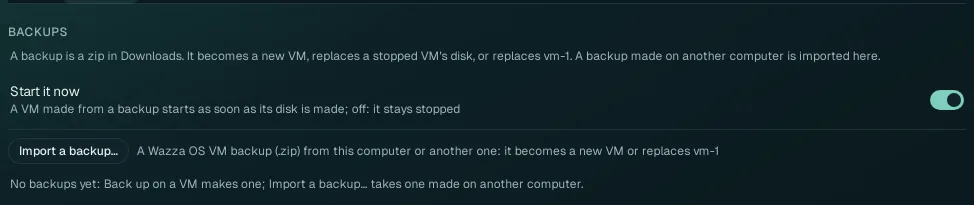
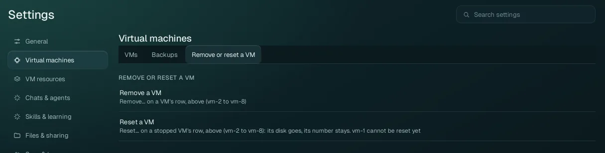

Settings › Virtual machines
Your VMs: which one this window shows, start, stop and restart, add another VM, back one up to a zip and bring it back, remove or reset one.
Most people only ever use vm-1, the VM the first start makes. More VMs are for keeping work apart (a client's project, a test setup), each with its own apps, files and Chats. You can have up to 8 VMs, and 4 can run at the same time.
VMs#

This window shows#
The drop-down names the VM whose tabs, desktop and Chats this Wazza OS window shows, with its state (vm-1 · ready). Pick another running VM to switch the window to it. Next to it:
| Button | What it does |
|---|---|
| Start | Starts the VM shown (when it is stopped). A cold start takes about a minute. |
| Stop | Shuts the VM down: its apps end (unsaved work in them is lost), its disk and files are kept. |
| Restart | Stops and starts the VM. Use it when the VM's desktop or apps stop answering, or so that a setting that "applies at the next start" (disk, graphics, screen size) takes effect now. |
The VM list#
Each VM of this computer has a row: its number (vm-1 to vm-8), (primary) for vm-1,
shown for the one this window shows, a green dot while it runs, and a line with its state, its disk size,
its memory limit and its processors (with the Auto profile they come from: see
VM resources). The list refreshes by itself.
| Row button | When it shows | What it does |
|---|---|---|
| Start | A stopped VM other than vm-1 | Starts it with its own disk. A first start makes its disk and takes a few minutes; the row follows it and says why if it fails. One VM starts at a time: while another one is starting, the row offers Start when vm-N is ready (with Cancel). The other VMs run beside vm-1: when vm-1 is stopped, the row offers Start vm-1, then vm-N. |
| Stop | A running or starting VM other than vm-1 | Shuts it down; its apps end, its disk is kept. (vm-1 stops with Stop next to This window shows.) |
| Back up | A VM that has a disk, running or stopped (vm-1 too) | Copies its disk, compressed, into a zip saved as a new file in your Downloads folder, in the background. A running VM keeps running (a live copy). The row follows the job (phase and percent). |
| Remove… | A stopped VM, vm-2 to vm-8 | Removes the VM and its disk for good. A second click on Remove for good confirms; anything else cancels. |
| Reset… | A stopped VM, vm-2 to vm-8, that has a disk | Deletes its disk and everything in it for good, keeps its number; its next start makes a fresh disk (like a new VM). Confirm with Reset for good. |
Add a VM#
Click New VM. A new VM is added, stopped, with the lowest free number (vm-2 if you have only vm-1). Its disk is made the first time it starts.
Click Start on its row. The first start takes a few minutes.
To work in it, pick it in This window shows. Its tabs, desktop and Chats are its own.
At most 4 VMs run at once; with 4 running, stop one before you start another. Every running VM takes memory and processors within the limits of VM resources, which are shared out between the running VMs.
Backups#

A backup is a zip file in your computer's Downloads folder holding one VM's disk, compressed. The tab lists the backups Wazza OS made, each with two buttons:
| Button | What it does |
|---|---|
| Make a VM from it | Makes a new VM, stopped, with that disk (the lowest free number). Your other VMs are not touched. |
| Move into a VM… | Replaces the disk of a stopped VM other than vm-1 with the backup. Everything that was in that VM is lost; confirm with Replace for good. |
One backup or restore runs at a time, and while it holds a VM's disk, that VM's row offers nothing. Back up before
a risky change; copy the zip elsewhere (a USB disk, another computer) to keep it safe. From a terminal:
wazza --gui vm backup vm-2, wazza --gui vm backups,
wazza --gui vm restore BACKUP_ID (see The command line).
Remove or reset a VM#

This tab explains the two buttons of the VM rows (above): Remove… takes a VM away with its disk; Reset… keeps the VM but replaces its disk with a fresh one. Both work on vm-2 to vm-8 only, and only when the VM is stopped.
Its disk holds Wazza OS's own state. To start vm-1 again from nothing, use Settings › This computer › Remove all data, which erases everything of Wazza OS on this computer (every VM, Chat, sign-in and setting).